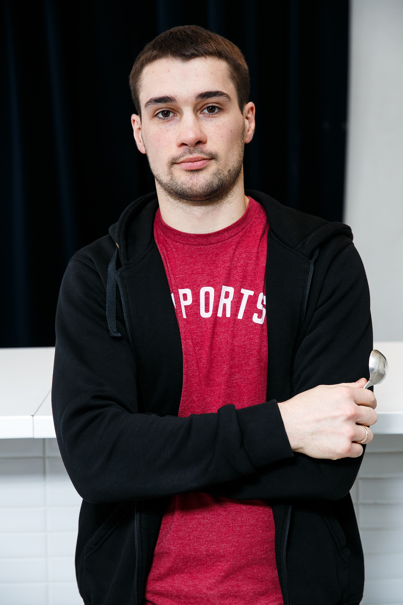

Denis Sigulin
Gender: male (he/him)
Date of birth: 15 March 1990
Achievements
- Q-Grader
- Q-processing certified
- 1st place in the Russian Coffee Roasting Championship 2017
- 6th place in the World Coffee Roasting Championship 2017
- 2nd place in the Russian Coffee Roasting Championship 2018
Experience
June 2011-Nov 2014
Moscow, Russia
KLD Coffee Importers Ltd
Coffee trader, full-time job
Main responsibilities:
- Purchases and sales of green coffee beans
- Quality control
- Green coffee samples management
Nov 2014-June 2016
Moscow, Russia
LLC Coffee Workshop
Purchase and sales manager, full-time job
Main responsibilities:
- The company products' presentation for new and existing wholesale clients
- Supply of the production department with everything needed for its smooth operation
- Quality control of the production
- Monthly reporting
July 2016-Sep 2019
Moscow, Russia
LLC Sova Service
Chief technologist, full-time job
Main responsibilities:
- Production department's management
- Quality control of green and roasted coffee beans
- Creating and control of roasting recipes
- Research and development of new products
- Sales and installation of coffee roasting equipment PROBAT
- Monthly reporting
Sep 2019-March 2022
Sochi, Russia
Entrepreneurship
Entrepreneur
Main responsibilities:
- Coffee roasting
- Coffee sales
- Accounting
- Logistics management
Education
2007-2013
Moscow, Russia
National University of Science and Technology MISiS
Diploma of Specialist in Information Systems and Technologies
Additional courses
- SCAE Roasting, Foundation
- SCAE Roasting, Intermediate
- SCAE Sensory Skills, Foundation
- SCAE Sensory Skills, Intermediate
- SCA Sensory Skills, Professional
Hobbies
- Swimming
- Running
- Programming